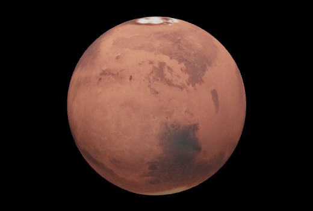

MARS
Mars, Dünya’nın yarısı kadar olan soğuk bir çöl gezegenidir. Toprağında bulunan demirden dolayı
kırmızı gözükür ve bu sebeple “Kırmızı Gezegen” olarak da adlandırılır.
Dünya gibi Mars’ın mevsimleri, kutupları, volkanları, kanyonları ve hava olayları vardır. Atmosferi
çok incedir. Karbon dioksit, nitrojen ve argondan meydana gelir.

Mars Gezegeni (Kaynak:NASA)
Mars’ın yüzeyinde eski çağlarda gerçekleşmiş sel baskınlarının izleri vardır fakat şimdilerde
Mars’ta su sadece seyrek bulutlarda ve buzlaşmış toprakta bulunmaktadır. Bazı Mars dağ
eteklerinde tuzlu su kalıntıları bulunmuştur. Mars’ın kendi etrafında dönüşünü tamamlaması
yaklaşık olarak bir Dünya gününe eşittir. Mars’ta bir gün 24,6 saat sürmektedir. Buna karşılık bir
Mars yılı 687 Dünya gününe karşılık gelir.
Mars’ın Uyduları:
• Phobos
• Deimos
Mars'ın 60.000 yıl içersinde en yakın geçtiği zamanda Hubble Teleskopu tarafından çekilen fotoğraf (Kaynak:NASA)
Bu fotoğrafta Mars'ın bazı yer şekilleri ve bulutları görülmektedir(Kaynak: NASA)
Kaynak: NASA